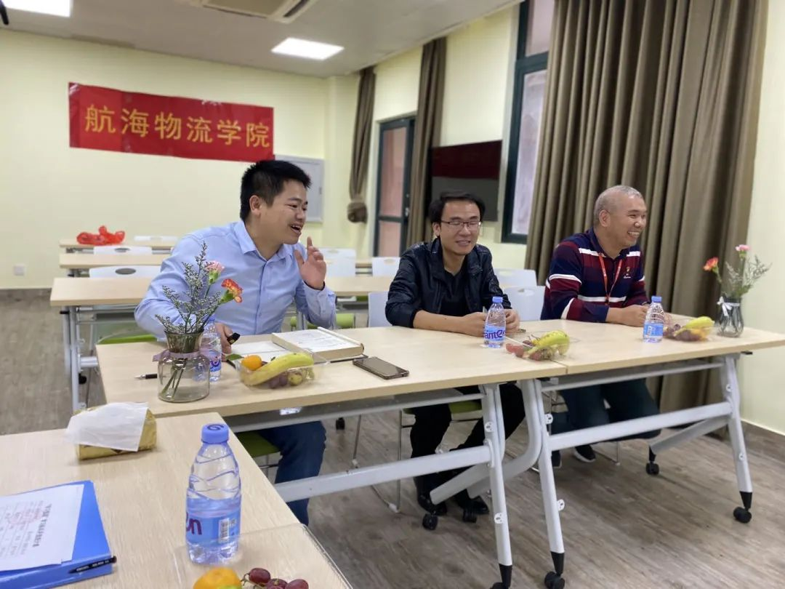
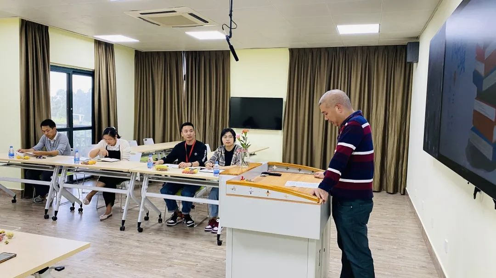
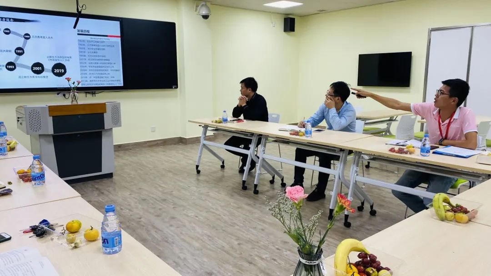
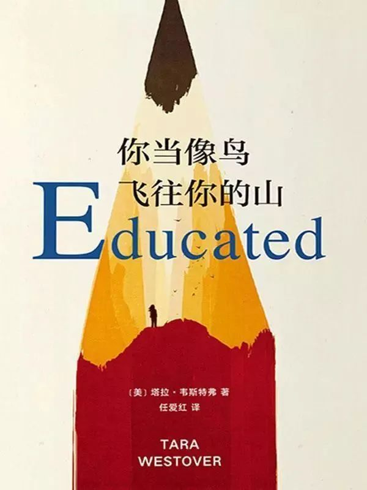

没有一艘船能像一本书
也没有一匹马能像
一页跳跃着的诗行那样
把人带往远方
——艾米莉·狄金森
“书籍是人类进步的阶梯”，让读书成为一种习惯。2020年10月14日下午16时，我院老师在行政楼二楼参加具有学习意义的读书分享会。每位老师都带来了自己喜欢的书籍与大家分享，并有幸邀请到校党委副书记李明灿，图书馆林昭勇老师。本次读书分享会的主题为：书香溢满园，细嗅蔷薇香。
 读书会开始之时，我院党总支副书记魏榕根表示：做一个有家教，有教养的文化人。多读书可以让自己变聪明，可以在面对难题就不会慌张，只会冷静的思考。让自己不断地进步，不断地蜕变。
读书会开始之时，我院党总支副书记魏榕根表示：做一个有家教，有教养的文化人。多读书可以让自己变聪明，可以在面对难题就不会慌张，只会冷静的思考。让自己不断地进步，不断地蜕变。

首先，陈东水院长为大家分享的是他近期阅读的书籍——《人性的弱点》。该书汇集了卡耐基的思想精华和最激动人心的内容，是作者最成功的励志经典，出版之后立即获得了广大读者的欢迎，成为西方世界最持久的人文畅销书。无数读者通过阅读和实践书中介绍的各种方法，不仅走出困境，有的还成为世人仰慕的杰出人士。只要不断研读本书，相信大家也可以发掘自己的无穷潜力，创造辉煌的人生。
随后，张文生副院长为为大家介绍了我国四大名著之一《红楼梦》。张院长在会上讲到：看过《红楼梦》的人很多，这一本书也是一份精神食粮是曲美、词美、人更美。这一本书也是在他跑船期间夜晚伴自己入睡的读物。

紧接着，我院党总支副书记魏榕根在会上讲到：大学的生活大家都经历过，但是我们真正了解大学吗？所以今天魏榕根书记在读书会上分享了《大学的意义》一书。本书为我们如何衡量我们是否创造了价值，一个重要的尺度就是看我们在生活中能不能继续生长，能不能促成新东西的产生。
决定你未来的是对变化把握的能力，决定你价值的是做好你自己。好好珍惜这个时代，珍惜你拥有的一切，特别是大学的这段时光。

20级航海物流学院辅导员董灿荣老师为大家带来的是新东方创始人俞敏洪所著的《愿你的青春不负梦想》一书。本书激励年轻人在这个身心备感压力的巨变时代，把握机会，主动改变，勇于坚持！读完本书，你将收获前所未有的勇气，以及俞敏洪分享的宝贵经验与方法，坚定自己前进的步伐，实现自己的梦想。
好 書 分 享
读完大冰的作品之后，个人收获有很多，感想也有很多。在这世间，我们还年轻，我们还有很多知识要去学习。我们只要相信:只要我们每个人都坚持下去，坚持做着自己最热爱的事情，我们每个人终将变得不平凡。最后，只愿我们每个人都能够坚持自我、拥抱未来!

闪耀的标签，或者奇怪的事情，从来不能真正的打动我们。触动人心的往往是平凡而又扣人心弦的真实。读完这本书才明白，她那朴实的笔触，描述着她悲惨的童年，她逃离大山，用教育打开了新世界的大门。有了不妥协，不放弃，无论在怎样的境遇，都要真实地做自己的信念。在这本书中，或许也可以找到自己的影子。
本次读书分享会，各位老师畅所欲言，互相学习，互相补充；小小的教室，却被大家的热情所包围。书是灯，读书照亮了前面的路;书是桥，读书接通了彼此的岸。

 微信
微信
 缴费
缴费